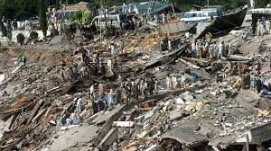

North

Affected regions:
Jammu and Kashmir, Himachal Pradesh, Uttarakhand
Recent disaster
Name : Kashmir Earthquake
Date : Oct 8, 2005
Magnitude : 7.6 Magnitude
Epicenter : Epicentre located 12 miles (19 km) northeast of Muzaffarabad, the administrative centre of
the Pakistani-administered Azad Kashmir area
Damage : The earthquake caused major destruction in northern Pakistan, northern India, and Afghanistan,
an area that lies on an active fault caused by the northward tectonic drift of the Indian subcontinent. The
Muzaffarabad area was the worst hit, and a number of villages there were totally destroyed. At least 32,335
buildings collapsed in various cities in the Kashmir region—including Anantnag and Srinagar in Jammu and Kashmir
state (now union territory), India
Deaths : At least 79,000 people were killed and more than 32,000 buildings collapsed in Kashmir, with
additional fatalities and destruction reported in India and Afghanistan, making it one of the most destructive
earthquakes of contemporary times.